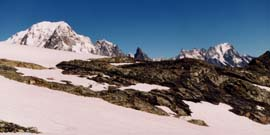

Miravidi (3066 m)

Départ : pont de Chézari (2047 m)
Aller : 5,2 km, +1019 m, 176 min
Retour : 5,2 km, - 1019 m, 107 min
Difficulté : EE/AF
Equipement : haute montagne
Période : août - septembre
Remarque : le ruisseau entre Crottes et Teppier peut être délicat à franchir (pas de passerelle en 1999).
Remarque sur la route d’accès : une route très étroite monte en 15 km au départ des anciens thermes de Bonneval, elle est réservée aux conducteurs avertis. En terre à partir de 1600 m ; mais c’est au dessous de Versoye qu’elle est la plus étroite. L’alpagiste la descend vers 7 h 30.
Bibliographie : Mérel (page 177)
Course décrite page 139 (croquis page 141).
L’arête sommitale est longtemps enneigée, sans difficulté notable.
Attention, de nombreux topos et cartes incitent à une montée au Miravidi par son arête N, impropre au randonneur. Le randonneur alpin pourra traverser sur le col de Breuil par le glacier (corde, crampons).
Photo Guy Mounier : le Mont Blanc apparaît au col des Veis